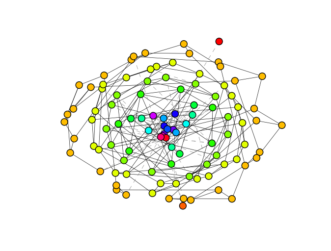

robust_graph package¶
Subpackages¶
Submodules¶
robust_graph.log_level module¶
Log levels used by Optimizer
| Name | Value | Description |
|---|---|---|
LOG_LEVEL_QUIET |
0 | suppresses all logs |
LOG_LEVEL_ERROR |
2 | shows only error logs |
LOG_LEVEL_WARNING |
3 | errors and warnings |
LOG_LEVEL_DEBUG |
4 | debug information |
LOG_LEVEL_INFO |
5 | useful information |
LOG_LEVEL_VERBOSE |
7 | shows all things |
The log is formatted in csv:
timestamp,loglevel,tag,message
2016-05-29 22:37:54.363486,D,IchinoseSatotani,optimizer initialized (graph=<7F475B625AD0> config={'log_level': 'V'})
2016-05-29 22:37:54.363755,D,IchinoseSatotani,enter optimization (current 0 step total 2 steps)
2016-05-29 22:37:54.456545,V,IchinoseSatotani,select edges (9 58) and (9 83) (k = (55 4) (55 3))
2016-05-29 22:37:54.469002,V,IchinoseSatotani,select edges (28 68) and (9 17) (k = (10 4) (55 5))
2016-05-29 22:37:54.484720,V,IchinoseSatotani,select edges (9 42) and (9 29) (k = (55 7) (55 3))
2016-05-29 22:37:54.497236,V,IchinoseSatotani,select edges (9 57) and (9 18) (k = (55 3) (55 4))
2016-05-29 22:37:54.509615,V,IchinoseSatotani,select edges (9 69) and (9 12) (k = (55 3) (55 4))
2016-05-29 22:37:54.521980,V,IchinoseSatotani,select edges (9 84) and (9 79) (k = (55 8) (55 3))
2016-05-29 22:37:54.538531,V,IchinoseSatotani,select edges (48 55) and (3 9) (k = (3 11) (11 55))
2016-05-29 22:37:54.550602,V,IchinoseSatotani,select edges (9 56) and (39 95) (k = (55 4) (23 3))
2016-05-29 22:37:54.562486,V,IchinoseSatotani,select edges (9 51) and (58 63) (k = (55 4) (4 6))
2016-05-29 22:37:54.574546,V,IchinoseSatotani,select edges (9 12) and (39 42) (k = (55 4) (23 7))
2016-05-29 22:37:54.586598,V,IchinoseSatotani,select edges (9 64) and (9 39) (k = (55 13) (55 23))
2016-05-29 22:37:54.600107,V,IchinoseSatotani,select edges (9 64) and (9 64) (k = (55 13) (55 13))
2016-05-29 22:37:54.612631,V,IchinoseSatotani,select edges (9 18) and (9 22) (k = (55 4) (55 2))
2016-05-29 22:37:54.624887,V,IchinoseSatotani,select edges (9 26) and (3 9) (k = (55 3) (11 55))
2016-05-29 22:37:54.640989,V,IchinoseSatotani,select edges (9 53) and (84 87) (k = (55 3) (8 4))
2016-05-29 22:37:54.653399,V,IchinoseSatotani,select edges (27 39) and (9 39) (k = (3 23) (55 23))
2016-05-29 22:37:54.665908,V,IchinoseSatotani,select edges (9 37) and (25 86) (k = (55 4) (14 5))
2016-05-29 22:37:54.678271,V,IchinoseSatotani,select edges (9 18) and (9 21) (k = (55 4) (55 3))
2016-05-29 22:37:54.690589,V,IchinoseSatotani,select edges (9 62) and (9 18) (k = (55 3) (55 4))
2016-05-29 22:37:54.702918,V,IchinoseSatotani,select edges (42 54) and (28 82) (k = (7 11) (10 3))
2016-05-29 22:37:54.703237,V,IchinoseSatotani,swap edges (42 54) and (28 82)
2016-05-29 22:37:54.764395,V,IchinoseSatotani,optimize success R = 0.202100 -> 0.203600 after 20 trials
2016-05-29 22:37:54.889305,I,IchinoseSatotani,update robustness 0.196500 -> 0.199500 at 0 step
2016-05-29 22:37:54.968138,V,IchinoseSatotani,select edges (9 77) and (7 80) (k = (55 12) (3 7))
2016-05-29 22:37:54.968564,V,IchinoseSatotani,swap edges (9 77) and (7 80)
2016-05-29 22:37:55.026764,V,IchinoseSatotani,optimize success R = 0.205300 -> 0.202900 after 1 trials
2016-05-29 22:37:55.149647,I,IchinoseSatotani,update robustness 0.205300 -> 0.197600 at 1 step
2016-05-29 22:37:55.150018,D,IchinoseSatotani,exit optimization (current 2 step total 2 steps)
robust_graph.optimizer module¶
-
class
robust_graph.optimizer.Optimizer(graph, log_level=0, force_update=True, **config)[source]¶ Bases:
objectAbstract class of robust-optimize algorithm
Parameters: - graph (networkx.Graph) – Graph to be optimized
- log_level (int) – Log level defined in
robust_graph.optimize.log_level - force_update (bool) – If True, accept update even if
_update_one_step()claims imcomplete result - config (dict) – Optional parameters on subclass
-
_update_one_step(graph)[source]¶ Optimize(update) robustness only one step. This function is not implemented and overwrite it in subclass.
This function must return a 2-element tuple that has:
- represents wheather this update is complete or not
- optimized graph
Parameters: graph (networkx.Graph) – Graph to be optimized Returns: Tuple described as above Return type: tuple
-
current_graph()[source]¶ Returns a deep copy of graph which this optimizer holds currently.
Returns: Current graph of optimizer Return type: networkx.Graph
-
optimize(steps=1)[source]¶ Optimize robustness of graph.
Parameters: steps (int) – The number of optimize steps Returns: Optimized graph in robustness Return type: networkx.Graph
robust_graph.robustness module¶
-
robust_graph.robustness.R(G, n=1)[source]¶ Computes network robustness in [SMA+11].
Parameters: - G (networkx.Graph) – The graph
- n (int) – The number of iteration, increase to accurate result.
-
robust_graph.robustness.s(G, n=1)[source]¶ Computes network robustness in [SMA+11].
Parameters: - G (networkx.Graph) – The graph
- n (int) – The number of iteration, increase to accurate result.
robust_graph.time_tracker module¶
-
class
robust_graph.time_tracker.TimeTracker(opt_class, graph, cols=[], **config)[source]¶ Bases:
objectTimeTracker constructor
Parameters: - opt_class (Optimizer) – Optimization algorithm
- graph (networkx.Graph) – Graph to be optimized
- cols (list-of-tuple) – List of column name and function(graph -> double)
- config (dict) – Optional parameters for optimizer
-
current_graph()[source]¶ Returns a deep copy of graph which this tracker holds currently.
Returns: Current graph of tracker Return type: networkx.Graph
robust_graph.util module¶
-
robust_graph.util.load_us()[source]¶ Load US airline network.
Returns: US Airline network Return type: networkx.Graph
-
robust_graph.util.onion_layout(G)[source]¶ Find node positions for onion-like topology
Parameters: G (networkx.Graph) – Graph Returns: Position dictionary in networkx Return type: dict
-
robust_graph.util.powerlaw_sequence(n, gamma, avrdeg)[source]¶ Generate power-law degree sequence by pareto distribution.
Parameters: - n (int) – The number of nodes
- gamma (float) – Exponent of distribution
- avrdeg (float) – Average degree
Returns: Degree distribution
Return type: list
-
robust_graph.util.save_graph_as_image(G, filename, layout=<function onion_layout>, **kwargs)[source]¶ Save given graph as image. Node colors represent each degree of its node. Edges are shown as solid line if degrees of two incident nodes are same, otherwise, dash.
Parameters: - G (networkx.Graph) – Graph
- filename (str) – filename
- function (layout) – function returns position dictionary
- dict (kwargs) – to pass to layout function
-
robust_graph.util.scale_free_network(n=100, gamma=2.5, avrdeg=8)[source]¶ Generates a scale free network by configuration model, which is shown in [Wu2011]
Parameters: - n (int) – The number of nodes
- gamma (float) – Exponent of degree distribution
- avrdeg (float) – Average degree
Returns: Scale-free network
Return type: Generates degree sequence from calling
powerlaw_sequence()andnetworkx.utils.random_sequence.create_degree_sequence()then, build network by configuration model (seenetworkx.generators.degree_seq.configuration_model()) finally, remove self-loop and parallel edge to simplify.Note
Actual average degree is smaller than avrdeg